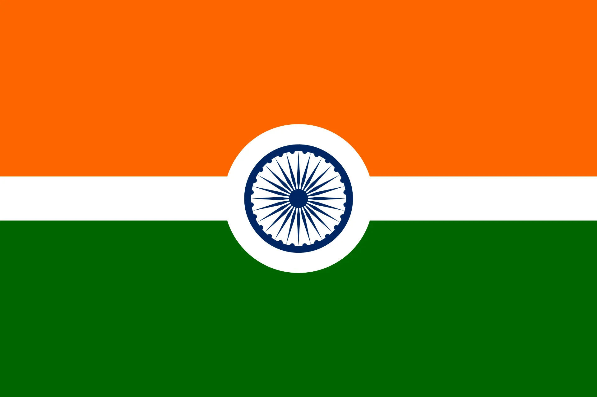

Список стран по численности населения
Главная страница

Индия самая населенная страна в мире после Китая, сейчас уже ее население составляет около 850млн. Ежегодные темпы прироста населения Индии составляют 1,8%, что значительно выше соответствующего показателя во многих регионах развивающегося мира. Каждый год рождается около 24 млн. детей примерно 8,5 млн. человек умирает – в результате прирост составляет 15,5 млн., что равно населению Австралии. Предполагается, что если население Индии будет и дальше, расти такими же темпами, то к концу нынешнего века его численность перерастет миллиардную отметку. В стране было создано большое число рабочих мест, но оно было недостаточным для того, чтобы охватить безработных и тех, что пополнили ряды трудоспособного населения. По различным оценкам, общее число полностью или частично безработных, особенно в сельской местности, составляет десятки миллионов человек.
В стране проводится демографическая политика, направленная на сокращение рождаемости. Средняя продолжительность жизни в настоящее время достигает приблизительно 55лет. Подавляющее большинство индийцев - сельские жители. Мужчин в Индии больше, чем женщин. Это объясняется повышенной смертностью среди женщин, связанной ранними браками и многочисленными деторождениями. Средний возраст вступления в брак для мужчин около 22лет и для женщин 15-17лет.
Число грамотных в Индии незначительное, особенно среди женщин, где-то около 38% населения, к числу грамотных людей относятся люди, которые понимают печатный текст и осознанно могут написать несколько фраз. Почти одна треть населения Индии участвуют в экономически производительной деятельности, занимаясь производительным и умственным трудом.
Индия является самой многонациональной страной мира. Сложен этнический состав, где насчитывается несколько сотен наций, народностей и племенных групп. Ее населяют крупные народы, представители которых отличаются друг о друга и внешним обликом и языком, и обычаями.